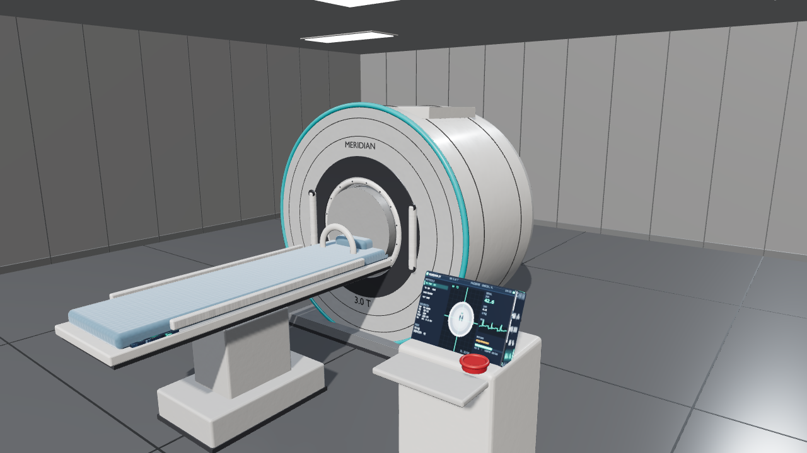

Resonancia magnética de 3.0 T. Treinta y dos componentes explorables, una sala completa y el estudio simulado — todo dentro del navegador.

El comprador de un hospital no necesita un folleto: necesita ver el equipo. Esta demo le deja recorrerlo pieza a pieza, entender qué hay dentro y comprobar si cabe en su sala — desde el móvil, sin instalar nada.
Las 32 piezas se separan con su nombre y su función. Del gantry a los tornillos del túnel, sin desmontar nada.
Un clic acerca la pieza y abre su ficha: material, función y mantenimiento. El equipo no se mueve de su sitio.
El paciente entra al túnel, la mesa se desliza y el anillo de luz marca la adquisición. La secuencia completa, en 20 segundos.
Vinilo, mamparos, puerta y plafones. El equipo se ve instalado y el cliente comprueba su espacio real antes de decidir.
Carpeta autónoma: el GLB de 32 piezas, la sala y el visor. Se publica en la web del fabricante o se abre a pantalla completa en feria, iPad o portátil.